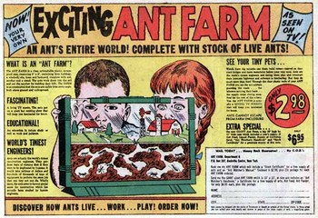
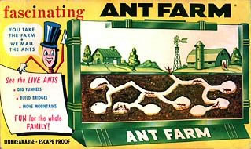
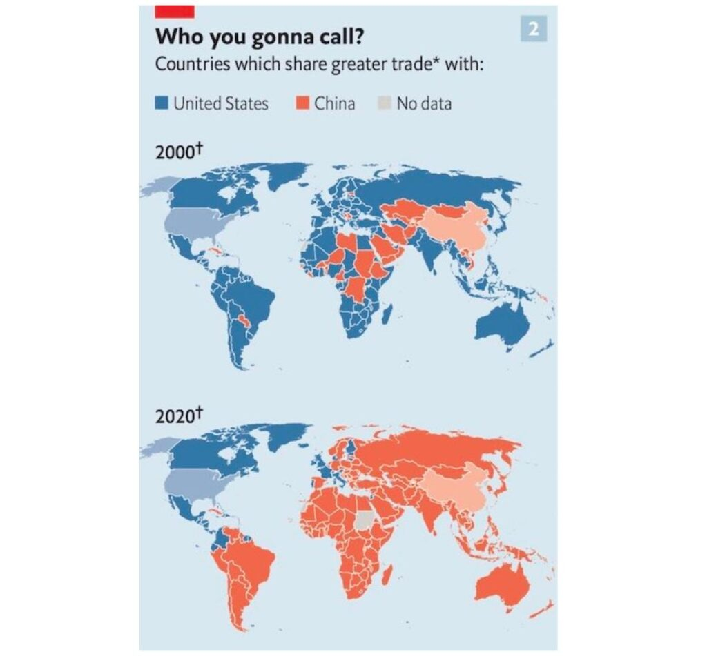
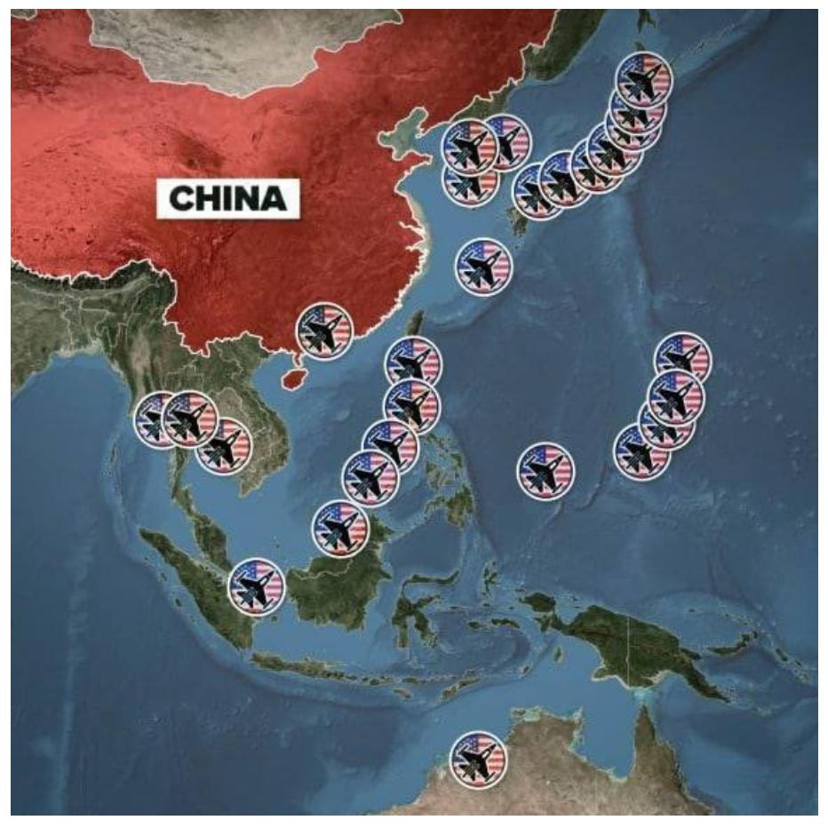
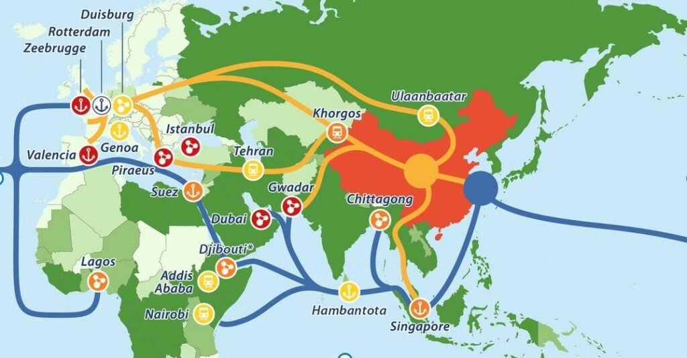

Back in the 1960’s, oh about 1966 or so, we used to read comic books. All of us kids did that. We would read Archie comix, and Richie Rich comix, and war comixs. SO many different kinds of comic books.
And at the back of these comix were advertisements that catered to us young kids. Boys and girls.

One of the advertisements was an “ant farm”. This consisted of two plates of clear plastic with sand between, and a ant colony trapped in the middle. You could go and watch the ants create their little rooms and passages in this tiny little world that they were trapped in.
Now, my friend “Dino” who lived across the street from me got one of those toys. And sure as shit, he would allow the farm to grow big, with all sorts of rooms, and what not.

And when the little tiny ant kingdom seemed to be well and functioning, he would pick it up and shake it vigorously. Thus destroying all the work those poor little ants put into it.
And they would start from scratch all over again.
Ugh!
We as boys, thought it was fun to do, and then we would lay the plastic ant farm on the table and then go outside to play and adventure throughout the day. Totally forgetting about what we had done to those ants.
I wonder…
If our “prison planet” existence is something like this. Where some other beings torture us, as a kind of intergalactic pastime. That they enjoy periodically. Then move on-wards to better experiences.
Sigh.
Today…
Have you ever caught your neighbor snooping around your property? If so, what did you do?
I sure did. I bought a house when I had gone thru a divorce in a nice neighborhood with a lot of retired people. Retired people are the best, free security system ever. One man would see me working in the yard and would always come help me. He might bring a tool to make the job easier or just help with heavy work. He asked me what all I was trying to get done in the yard, so I told him a list of things off the top of my head. He took it upon himself to come over while I was at work and finish some of the projects on my list. His yard was immaculate so I guess he was very nice and a little bored. I’d come home to rocks moved around, plants dug up, etc. Nothing not on my list. Occasionally I’d find a new hanging plant. He and his wife kind of adopted me. So I take care of them at Christmas and birthdays. It’s been awesome.
What changed in the US-China relationship that is pushing the two countries closer to war?
No one seems to know. Readers who follow developments in China closely, know that relations between the two superpowers have grown increasingly strained in the last few years. But while the US has taken a more hostile approach to China, no one seems to know why. Was there something in particular that China did that angered Washington leading to the imposition of economic sanctions, technology blockades and military provocations in the Taiwan Strait?
No, there’s no indication that China did anything. What changed was Washington’s approach to China. And—as you’ll see—Washington’s approach changed very quickly and very dramatically. China went from friend to foe almost overnight.
Here’s why.
Following the dissolution of the Soviet Union in 1991, the US maintained a policy of engagement with China that accelerated its development and transformed the country into the main engine of global growth. In December, 2001, China was granted “most-favored-nation”(MFN) status which was followed shortly after by its entry into the World Trade Organization (WTO). These developments allowed China to access western markets which turned China into a manufacturing center for US multinationals like Nike, Apple and Dell. China’s opening also triggered a surge of foreign investment which pumped up growth while strengthening its financial assets and bond market. In short, US policy laid the groundwork for the “Chinese miracle” which set the stage for a great power conflict with the US.
No other country in the world is more responsible for China’s meteoric rise than the United States. Now, however, the foreign policy establishment has decided that it doesn’t like its own creation. It doesn’t like the fact that China took advantage of the opportunities it was given to transform itself into a peer competitor of the United States. It doesn’t like the fact that China’s economy is growing more than twice as fast as America’s and is set to surpass the US within the decade. It doesn’t like the fact that China is building a 21st century, state-of-the-art infrastructure grid that will economically integrate a large part of Europe, the Middle East, Africa and Asia into the world’s biggest free trade zone. It doesn’t like the fact that China’s expansive economic/political strategy will inevitably replace the “rules-based international order” with a Chinese-led system in which the renminbi is the world’s reserve currency and China’s financial markets are the largest and most liquid in the world. America’s foreign policy establishment is not happy about any of these developments especially since it is largely responsible for all of them.
Don’t get me wrong; the Chinese are intelligent, resourceful, creative, and industrious people. And the Chinese Communist Party has played a critical role in lifting 800 million people out of poverty while steering the nation’s economy towards unprecedented growth and prosperity.
But if China was not given access to western markets and entered into the WTO, there would be no Chinese miracle and no Chinese superpower today. Those opportunities were the result of widely-supported policies that were endorsed almost-universally by US foreign policy elites. So, if Washington now regrets having supported those policies, it can only blame itself. Here’s some more background from foreign policy expert John Mearsheimer:
During the Cold War and under the policy of President Nixon, the U.S. decided to engage China and form a quasi-alliance with China against the Soviet Union. That made eminently good sense. And Nixon was correct to help the Chinese economy grow, for the more powerful China became, the more effective it was as a deterrent partner against the Soviet Union. However, once the Cold War ended in 1989 and the Soviet Union collapsed in 1991, the U.S. no longer needed China to help contain the Soviet Union.
What we foolishly did was pursue a policy of engagement, which was explicitly designed to help China grow more powerful economically. Of course, as China grew economically, it translated that economic might into military might, and the U.S., as a consequence of this foolish policy of engagement, helped to create a peer competitor.
My bottom line is that the Nixon-Kissinger policy, from the early 1970s up until the late 1980s, made eminently good sense. But, after that, engagement was a colossal strategic blunder….
The U.S. was not only expecting China to grow more powerful—it was purposely helping China to grow more powerful. It was doing this based on the assumption that China would become a democracy over time and therefore would become a responsible stakeholder in an American-led international order.
Of course, that didn’t happen. China did not become a democracy. And China, in effect, has set out to establish hegemony in Asia and challenge the U.S. around the planet. We now have a new Cold War.” U.S. engagement with China a ‘strategic blunder’: Mearsheimer, Nikkei

While I agree with most of what Mearsheimer says, I strongly disagree with the notion that US leaders were genuinely concerned about China becoming a democracy. Nor does democracy explain why US policy changed from mutually-beneficial engagement to open hostility. What Mearsheimer fails to acknowledge is that the western economies are controlled by an oligarchy of elites who have been unable to make any significant inroads into the Chinese government’s power-structure. This is not because the Chinese government is ostensibly “communist”, but because Chinese leaders are strongly nationalistic and determined to maintain China’s own sovereign independence against the onslaught of western elites. In other words, the emerging confrontation with China is a power-struggle between the WEF globalist cabal and Chinese nationalists.
In any event, China is not responsible for the strained relations that exist today. The hostility and provocations are all coming from the United States which is trying to undo the damage it did by implementing policies that ran counter to its own national interests. In short, the Biden administration is trying to reverse 30 years of failed policy by doing an about-face and then blaming it on China. It’s a classic “bait and switch” operation. Here’s more from Mearsheimer:
As time has shown, the engagement strategy was a failure. The Chinese economy has made an unprecedented leap forward, but the country has not transformed itself into a liberal democracy or “a responsible glass holder (a player interested in maintaining the current international order).” On the contrary, Chinese leaders see liberal values as a threat to their country’s stability. And they, as the leaders of the rising powers usually do, have a tough foreign policy. We must admit that economic involvement was a colossal strategic mistake. Kurt Campbell and Eli Ratner – two former Obama administration officials who admitted that engagement had failed and those in the Biden administration today – write: “Washington is now facing the most dynamic and formidable contender in modern history.” (U.S. engagement with China a ‘strategic blunder’: Mearsheimer, Nikkei)
The question that immediately arises is: If engagement was such “a colossal strategic mistake” then why did it take 30 years to figure it out? With a population that is 4 times the size of the US and GDP growing at roughly 9% for 2 decades, it should have been fairly obvious that China was going to be bigger and more powerful than the US in the not-too-distant future. And yet everyone in the political establishment pretended not to see what was right beneath their noses.
That’s shocking. And what’s even more shocking is the remedy our leaders have settled on to maintain their current advantage in the global order. They intend to do everything in their power to sabotage China’s economic development. This aligns perfectly with Mearsheimer’s observation that “the only opportunity that can change the dynamics is a dramatic crisis undermining China’s unrelenting growth.” And that explains what’s going on today, the Biden administration is making a concerted effort to target the vulnerable sectors of the Chinese economy and inflict as much damage as possible via sanctions, blockades and supplyline disruption. We expect that this economic war on China will gradually intensify in the next few years along with new provocations in the Taiwan Strait and South China Sea. If Mearsheimer’s analysis is correct, then we are still in the early rounds of a hybrid war that will undoubtedly drag on for years to come.
So, when did it occur to our foreign policy geniuses that fueling China’s growth might actually hurt US prospects for the future?

We don’t know the specific date, but it looks like sometime around 2017 the elite consensus that supported engagement began to fall apart as more and more people became aware of the policy’s shortcomings. Check out this comment by the Financial Times associate editor Martin Wolf who explains how quickly western elites turned against China:
I think what is happening is that western policymakers and above all, American policymakers have decided that the rise of China is a major strategic threat. And this has several dimensions. One of these is that the left of center has come to the view that “Well, they are never going to become a democracy as we thought they would, and that is problematic. We don’t like that.” But the bigger element—which is the view of the strategic community and quite a large part of the corporate community—is that “These people (China) are a serious threat. They have immense resources, the defense build up is quite substantial, and they getting are ahead technologically in some very important areas, and we are far too dependent upon them….. They see the interdependence on China as frightening, and this paranoia has now become a dominant element in American thinking…. And it has shifted very quickly and very much across the board in America although we are now seeing it in Europe as well. A paper was recently released by the German Industrial Confederation which basically said, “You know the Chinese technology policy; it’s a threat to Germany.” This is a big change and it’s happened quite recently.” China: Friend or Foe?, You Tube, 12: 35 minute
So, according to Wolf, overall views on China among foreign policy elites changed very quickly and very dramatically. (Wolf’s account is similar to many other elites who tell the same story.) Engagement was increasingly seen as damaging to western interests, and the search for a different approach began. What Wolf fails to tell us is what it was that convinced foreign policy mandarins that China had become “major strategic threat”? Was it due to the CCP’s increasingly activist oversight of foreign corporations or the Communist Party’s refusal to implement reforms of their massive State Owned Enterprises (SOEs) or did it have something to do with China’s impressive strides in advanced technology that put the future of AI and supercomputing up-for-grabs?
What was it?
While we can’t answer that question with 100% certainty, we can make an educated guess.

In 2013, Chinese president Xi Jinping launched his signature infrastructure program called the Belt and Road Initiative, which is a vast, multi-continent development strategy that is the most expensive and expansive infrastructure program of all time. The BRI has already garnered commitments from more than 150 nations representing 75% of the global population. The stated goal of the project is “to enhance regional connectivity and embrace a brighter future.” In fact, the project does all of that and much more. The BRI will improve ports, skyscrapers, railroads, roads, bridges, airports, dams, coal-fired power stations, and railroad tunnels. It will create a vast spiderweb of cutting-edge high-speed rail that will lower the cost of shipping while boosting the profits of manufacturers and wholesalers. The BRI projects a vision of a fully-integrated 21st century world in which Beijing lies at the very epicenter of global commerce. This is why the US and its allies—who are the staunch defenders of an archaic, extractive model of neoliberal capitalism—are prepared to do whatever-it-takes to derail China’s development and prevent this futuristic plan from going forward. Here’s how Sir Malcolm Rifkind, politician and former cabinet minister, summed up the significance of the BRI in a recent discussion of China on You Tube:
“I think if we’re going to look years ahead, I think the most important thing is the potential relevance of the Belt and Road Initiative to the relationship of Europe and China. For a thousand years, Europe and China have had to have contact with each other through the sea lanes. That huge central Asian landmass was, like the Atlantic Ocean- a barrier. What is happening now; and if we look 5, 10, 15 years ahead—already freight trains are going from China to western Europe in increasing numbers in both directions. So, what that means is, Europe and China could be looking directly at each other in a way that Europe and North America were able to do because of air travel and because the Atlantic became a bridge. That would be a historic change regardless of the politics China and Europe looking directly at each other and trading with each other in that way. That would have massive implications.” China: Friend or Foe? You Tube, 1:21:10 min
Rifkind is right. The opening of transit corridors and freight lines between China and Europe are “the most important thing” because they draw the continents closer together into a giant free trade zone which will inevitably increase their mutual power and prosperity while leaving the US on the outside looking in. This is why the Biden administration is so determined to make sure the BRI does not become a reality. Keep in mind, the primary foreign policy objective of the United States is “to prevent any hostile power from dominating a region whose resources would, under consolidated control, be sufficient to generate global power.” The vast expansion of China’s Belt and Road across the Eurasian landmass and linking European capitals to Beijing and Shanghai, definitely fit that description and qualify China as Washington’s mortal enemy.
China’s leaders still believe that they can reach an accommodation with Washington that will help to avoid a direct confrontation. But Washington’s red lines have already been crossed and there’s bound to be trouble ahead.
*
Note to readers: Please click the share button above. Follow us on Instagram and Twitter and subscribe to our Telegram Channel. Feel free to repost and share widely Global Research articles.
This article was originally published on The Unz Review.
Italy Foreign Minister Visited China to Get Free From the US’s Rule Over Europe!
Italy Foreign Minister Visited China to Get Free From the US’s Rule Over Europe!
Huawei M60 Pro shocked the world. Why is it?
Try imagining this.
For the U.S. to decide this Chip Act it must have been debated at length by hordes of parties and institutions including dozens of companies in the U.S. and throughout US allies.
Why?
Well simple. The repercussions are simply gigantic and colossal if indeed this act fail. It will cause trillions upon trillions of dollars lost over time. At least a hundred U.S. and its cronies chip firms may simply go out of business all together.
Worst is that this is the last thing the US can do to stop and contained China if this fails, that will be the end of US hegemony in technology. So for the U.S. to take this measure is like putting everything at stake into this one act. Billions has to be spend to build a plants in the U.S. that hinge on China’s failure to counter act. Billions need to be spend to protect and subsidise these hundreds of firms in case it fail.
Countries whose livelihoods depend on this precise technology and business to survive and thrive have to be bribed and coerce to cut out China. These bribes probably run in the trillions of dollars figures.
And all these hinge on one and only one assumption. That is China will not be able to design, make and manufacture this high end chips for at least a generation! If this assumption fail to materialised then the U.S. will be thoroughly fxxked for a generation and it will forever not able to compete with China.
In other words, there is absolutely no room at all for failure. Failure means China will now totally controlled every aspect of Chip making technologies from materials, to designing, to developing , to mass producing in the billions. And it will do it at a fraction of the costs of doing it in the U.S. which simply means the total implosion of all the U.S. chip firms!
So after a mere 3 years China did precisely what the U.S. fears most. Their worst fears has come true. The Chinese simply do not need a single technology from the U.S. and its cronies to launched this 5NM chip capable of 5G and satellite communications which also means there is zero possibility for the U.S. to hack it. 150 million orders have been placed and 40 million orders has been fulfilled in a mere 20 days from its launch.
This Huawei Mate 60 series including the Mate 5X is such a blow to the U.S. For a start the U.S. already lost 3 billion in profit had they not banned themselves from selling to China and up to a few trillion dollars have been wiped off the stock values of these chip firms from 27th August till now. The melt down will carry on and on and on till the U.S. economy collapse all together. We in the rest of the world call this Karma.
That is why it is such a big deal.
Given Biden’s evident senility, who is the real decision maker in US foreign policy? Anthony Blinken?
Right now?
There are three power blocs in US
Block 1 consists of :-
- The Gun Lobby AKA NRA
- The Energy Lobby
- The Don’t ask Don’t Tell Lobby
- The Anti Abortion Lobby
- The Baptist and Deeply Religious Bible Group Lobby
- The Selective Immigration Lobby
This Block mainly support Republicans and like a White Majority to be in charge of the country and preferably like straight men who stick to the gender they were born with
Fox News, Newsmax, Rush Limbaugh (Late), Lou Dobbs are sponsored by this Lobby
Block 2 consists of :-
- Big Tech (Google, Meta, Amazon)
- The Gun control lobby
- The Freedom of Choice Lobby
- The Anti DOMA Lobby
- The Freely Agnostic, Atheist or Freethinker Lobby
- The Pro Migrant Lobby
This block mainly supports Liberal Democrats, like minorities to be ostensibly in charge and have a fascination with Gay people and Transgenders and LGBTQ agenda
All MSM, Whoopi Goldberg, Seth Myers, Jimmy Kimmel, Jimmy Fallon are all sponsored by this lobby
Block 3 also called the TRUMP Block consists of :-
- Donald J Trump
- Friends of Donald J Trump
- Russian Naturalized Citizens in US
- East European Naturalized US Citizens
- Indian Migrants outside California
- The Trade Lobby
- US Steel Lobby
- Any Group that likes protectionism
- Law Enforcement Lobby of 31 States
- Blue Collar White Males with High School Diplomas
This Block liases with Republicans and has an uneasy alliance with the Republicans as it hates the democrats more
Tucker Carlson, Jimmy Dore, NTG are
Ultimately no matter who comes to power, there are two groups who have the last word in how the US must react :-
- Wall Street
- The Military Industrial Complex Or Defense Manufacturers / Contractors
Nobody can cross these two groups in US
These Two Groups give instructions through their tame organizations like
- National Endowment of Democracy
- WEF
- The NEOCON think tanks
Trump, Biden, Obama – they need an OK from these two powerful groups and their tame organizations, or they will be unable to do anything
This Senile Old Man probably needs to be told when it’s time to change his diapers
He is a total puppet controlled by the Neocons
Pennsylvania Dutch Brown Butter Noodles
This is a delicious side dish to a pot roast, fried chicken, baked ham, or pork chop dinner. In true Pennsylvania Dutch style, serve with a side of fresh cottage cheese topped with apple butter!
Ingredients
- Wide egg noodles
- Butter
- Salt
- Pepper
Instructions
- Cook wide egg noodles according to package directions, in the amount needed. As the noodles are cooking, melt butter (1 tablespoon per person/serving) in a small skillet and allow the butter to brown lightly (do not burn!). Drain noodles well, place in serving bowl and toss with the hot browned butter. If desired, add a small amount of salt and pepper.
As a police officer, has a suspect ever asked you, “Do you know who I am?” indignantly, and how did you react?
Yes it did happen a few times.
One time my partner and I stopped a vehicle that cut off another vehicle and made a right turn into oncoming traffic. I approached the driver and was immediately told that I had no right to stop him and that I better be careful and to choose my words carefully.
So I slowly said “ Sir, I stopped you for illegal lane change, illegal right turn and impeding the flow of traffic, did you understand the words that I just spoke to you?
He proceeded to tell me that he was a Los Angeles City Councilman and that if I “ gave him any shit, he would have my job.”
I explained that I needed to see his operators license, proof of insurance and registration.
Mr. Councilman stated that he already told me who he was and that he didn’t have to show me anything. I explained to him that I was going to be exceptionally nice to him and politely ask him one more time, but if he was not going to comply with the lawfull instructions from a sworn police officer he would be arrested, period.
He actually said that I didn’t have the balls to “ try “ to arrest him for a vehicle code violation.
I then reverted to my interactions with my 4 year old son.
I said I’m going to count to 3, and if he was not going to comply he absolutely would be going to jail and also that I would be impounding his vehicle. He again refused and he went to jail and didn’t pass go, his vehicle was impounded and all was good in the world.
My favorite scene from “The Sixth Sense”
“I think why this scene is so powerful is because everyone can relate to having lost someone in their life and have that desire to know that they made some kind of positive impact on the lost ones life.”
Who is a celebrity you have met accidentally? How was your experience meeting them?
I was in Scotland on holiday with my husband in May 2023. We were on the Isle of Skye and had stopped in at a remote cafe for breakfast. Behind us in the queue was a lady whose face was so familiar I was sure I knew her really well.
I was wracking my brains trying to remember if I’d worked with her, or if she was a friend of a friend. She was so familiar! I whispered to my husband that I was sure I knew her and he agreed that he’d recognised her too.
I finally decided to just ask her if we’d met before, and where. She looked at me and gently said: “No, we’ve never met. But I’m an actress so we’ve probably spent some time together but just not in person.”
It was Frances McDormand. A real REAL actress- not just a movie star. And then she introduced us to her husband, Joel Coen.
She was so utterly charming, I was fangirling so hard.
I can’t think of a lovelier way to tell someone they’ve made a mistake.
What is the worst thing to say on a date?
I am Egyptian. Arranged marriages are common here. And don’t get me wrong I actually really like them when done right. They are very close to the concept of blind dating.
However, sometimes you’ll get terrible suitors with no social intelligence. And yes guys there are Arab men who are way more decent than these not-so-bright ones. Take some examples:-
- A friend of mine sat with a suitor for the first time and the chat was actually pretty decent. But before he left he looked at her and said “but if you want to get married to me, don’t you think you should lose some weight?”. He was immediately out of the picture from that second. Not only are you trying to change someone on the first time you met them, but you also have no social intelligence to know what should and should not be said.
- Another friend of mine sat with a very rigid man. He told her “listen, starting off, I noticed several things about you that I cannot accept in a wife: 1- I noticed that your clothes need to be looser. 2- I heard you travelled with your friends several times before, I believe travelling is a waste of time unless necessary and I don’t like you travelling without me. 3- you mentioned something about having separate accounts? A man and his wife should be one. So one account is a must. 4- I know you’ve been working for years but I prefer that my wife doesn’t work. She politely went through the date and never got back to him. Who does he think he is again?
- When my cousin proposed to his current wife, he told her that he actually saw her before but definitely didn’t want to propose because she looked a little darker than he likes a woman to be, but thankfully that time it was just the lighting and she’s not as dark as he thought so here he is ! And yet she still married him. For me, he would’ve been a goner. What will you do if I get tanned in a vacation? If I get a burn on my face one day? Divorce me? Meh.
Lesson of the day : never try to change someone or comment on their appearance (unless positively) on the first date !
China refuses to allow DJI drones to deliver $6 billion in penalties to the US!
Over recent years, the United States has ramped up sanctions against various sectors of China’s industry, including the booming drone sector.
DJI, the leading Chinese drone manufacturer, now faces staggering fines totaling $840 million, along with demands for access to its core source code.
This controversy has not only sparked resentment in China but also raised questions about the U.S.’s approach to China’s technological advancements.
These sanctions are more than just punitive measures; they reflect the United States’ concerns and competitiveness in China’s thriving drone manufacturing industry.
As drones play an increasingly crucial role in modern warfare, tensions have escalated.
However, DJI’s dominance in the global drone market is rooted in its own innovation, not the misappropriation of U.S. technology.
What does Warren Buffett mean by making a “classic value bet” on HP?
Unlike us mere mortals, Warren Buffett actually reads company financial statements. Even more than that, he understands them. Surprisingly, he’s not big on what lawyers call “due diligence”, where you have a team of accountants and lawyers look at the company to see if they’re hiding anything because, over his years of experience, Buffett has learned that companies always hide their weaknesses in plain sight.
The “Buffet Way” is to go over a company’s public information and then put a question mark next to anything that looks weird. Other people do that too, but then they start asking questions of the company’s management. Buffett doesn’t do that – if there are too many question marks he just stops looking at the company. Plenty of companies to invest in. He’s usually right too.
So, what does he mean by “value”? Well, throughout Buffett’s career, his favourite companies tend not to be “growth companies” or “the next hot technology”. Frankly, unless Buffett fully understands the company’s products and business model, those are both massive question marks and he would rather not risk Berkshire-Hathaway’s money on them. Instead, Buffett has always preferred companies with lots of revenue that are consistently profitable. I remember reading one of his annual reports where he explained why he bought a company that made chocolates – it had consistent revenue and profits, and had a good management team and workforce. Sold.
Now, HP has been in business forever and has often been at the forefront of technology, but lately it has settled down to produce everyday products for consumers instead of specialty products for engineers. It sells a lot of stuff (at wholesale, it’s not a retailer), has a good team of management and engineers, and can be found at both the high and low ends of the market. It has good revenues and profits.
Naturally, most investors ignore HP because its stock price is pretty steady. That’s not a problem for Buffett. He thinks that many stocks of profitable solid companies are undervalued. He bases a stock’s price on its fundamentals, how much it sells, what it’s profit is, and how much it spends on ongoing research and development. In other words, he’s not buying HP’s stock because he thinks it’s going to go way up. He’s buying it because based on its current price, he thinks the share price will keep up with inflation and still have money left over for shareholders.
And he may be right. I bought two HP laptops this year. My printer is HP. My three old computers are HP.
What is the most unusual punishment a criminal has ever received?
You didn’t necessarily need to be a criminal to receive this punishment. This punishment was meant for vagrants and undesirable people. The punishment was called the tramp chair.
The Tramp chair was invented by Sanford Baker in 1885, and it was designed for towns that were too small for the Jails or for towns that couldn’t afford to build one.
The undesirables as they were known would be locked in the cage as an encouragement to move along. The people being punished were sometimes stripped naked before being locked in the chair, leaving the person to deal with the thick and sometimes rusty bars heating and cooling depending on the temperature outside.
They were even paraded around town to be subjected to harassment and cruel taunts from the public. They would then be wheeled to the edge of town to be released and foisted to the next town.
The Last of Us | Episode 1 | Fungus Pandemic Takeover Explained Perfectly
The gradual shift from amusement to horror on the TV host’s face is just so damn perfect, that scene in particular sends chills up my spine.
If the CCP attacks Guam as part of an invasion of Taiwan ought to the US destroy the Three Gorges Dam?
Jonathan Stern，I noticed that you don’t understand the military strength of the United States.
Iran’s strength is weak, but the United States dare not blockade the Strait of Hormuz.
Only by understanding oneself and the enemy can we win war.
For decades, the United States has attacked many weak countries. This makes you think that the United States can attack any country on Earth without retaliation. The United States can attack China’s Three Gorges Dam, and China can also retaliate and attack New York, rather than attacking the US warships.
Think about it, can China attack New York City after the United States attacks China’s Three Gorges Dam?
I hope my answer can make you smarter.
What are some potential internal factors that could cause China to fail?
Well. Just follow the United States model…
- Large numbers of Chinese people could start getting themselves addicted to heroin and fentanyl and dying from overdose.
- The China cops could start stepping on citizens necks in the streets or choking them to death or shooting them 12 times in the back for minor offences.
- Families could quarrel and argue and split up over differences in political beliefs.
- Hate groups could be allowed to spring up and flourish and spread their hate, on the basis that they are exercising their freedom of speexh.
- China could let its school standards in math and science deteriorate badly.
- China could stop providing universal healthcare to its citizens and make essential medical services very expensive for its people.
- China could allow free and easy access to guns for all, and improve its chances of having numerous mass shootings occur each month.
- It could choose senile octagenarians or outright criminals to be its leader.
- China could deny birth control and abortions to its women and girls.
- Instead of building more homes, schools, hospitals and other public infrastructure, it could buy more and more deadly missiles and bombs and mines and use them in wars on foreign soil, faraway from itself.
Well, that would be a very strong start.
Your soul belongs to God Bedazzled
Great scene.
“This scene is so powerful, just by looking at him and the friendliness of his voice, where he states that despite your mistakes everything is going to be just fine. This is by far the greatest interpretation of God I’ve ever seen, makes me happy to have witnessed it :)”
What’s the sleaziest trick a landlord tried to pull on you?
The landlord was this old witch in Ardwick Manchester.
She had a perfect set of furniture which she would move in and take photos of and develop them (this was still the age of paper photographs).
She would then move the furniture out and put some cheapo chipboard furniture into the house.
I took photos of these with time and date stamps.
She was an awful landlord and would always let herself in and root through our stuff. Absolutely nothing was repaired ever and I am almost certain she would steal money locked in our rooms. It was a shared house so when one of us had a day off and slept late she’d walk in on one of us sleeping and make excuses.
When the contract ended we decided to leave.
She of course kept the deposit because of significant damage to the furniture.
I showed my photographs she showed hers. This was back before deposit protection schemes so it went to the small claims court to get the house deposit back. She played the I’m an innocent old woman and these young men are scum.
She won, we lost. She kept the deposit.
The Ukrainian guy who lived with us didn’t like that at all. He went to Do it All bought a big lump hammer and caused massive structural damage to the house and went home to Kiev a couple days later.
CNN reported that the United States government is seeking more information about the Huawei Mate 60 Pro and to determine if parties bypassed American restrictions on semiconductor exports. What’s next?
Well, this is a prime example of the fog of war descending on America.
By forcing Huawei to cut ties with former partners, Huawei went dark, at least to the US government and foreign corporations vulnerable to US sanctions.
This is a problem America created, for America to solve.
The key pieces are all domestic mainland players who are sanction-resistant, or already under sanction. The US can certainly up the pressure and throw the kitchen sink at them, but they will not willingly divulge information based on a “query” by Americans.
You want it that way, you can have it.
Before 2018/19, the electronics industry was centered around East Asia, and people knew what the competition was working on, more or less, because the supply chain (and talent) was shared. Next-gen Apple and Google features were leaked months in advance, and many were right on the money.
But Donald the Orange changed all that.
Mainland players went dark, as multiple rounds of sanction tore up the eco-system for good.
It’s a brave new world, and there is a lot more uncertainty in the air ex-China, because the biggest unanswered questions are, what’s my Chinese competitors working on, and how is my largest market going to evolve? Remember, the Chinese government has mostly parried, and the Chinese will overwhelmingly buy Chinese once competitive domestic options come to market.
The electronics business is one with incredibly high bars for sunk cost, and mistakes can be very expensive, if not fatal.
The Chinese though, retain excellent business intelligence, because the major players are all represented in the industrial chain.
Good luck to the blind fighting the sighted, even if the spears are a little longer, and the swords sharper… for now.
When we study Russian military history, we realize that the Russian army always starts its wars badly and improves over time. Why does it happen?
This is not correct that it always happens, but instead of pointing out instances of this being wrong, because Russia eventually lost, or because Russia actually rolled their enemies right away, I will tell you why Russia has an affinity for this kind of warfare.
The answer is geography. Russia is an immense country, and even if most people live in the western regions it confers massive advantages. For example, Russia can hide things, even with modern intelligence gathering, Russia is so big, that yes you can take satellite images of all of Russia, but by the time that you analyze them things could have changed. For this reason many of Russia’s ICBMs are near invulnerable, as they are moved around Siberia on trucks, making it nearly impossible to have an accurate picture of where they actually are.
Historically, Russia has time on its side. Why? Because it has ample space to recover from defeats. Most enemies only ever fight a portion of Russia, with the rest of Russia supporting the economic efforts. If you advance 600km into Russia you will certainly hurt it, but you will have quite a bit more to go. If you advance 600km into Germany, you’re now in France.
As such, history is very forgiving to the country in Europe with the most natural resources, largest population, and most amount of room for failure. Russia can at least partially recover from nearly any initial failure militarily. This gives them time to adapt to what ever caused their initial defeat, and reverse the outcome of the war, provided they have the will to do so over the particular issue.
Other countries have the ability to do this, but rarely the time. For a small country, a defeat is usually decisive and they get no second chances.
The Sopranos || Fix You
The Sopranos is still the best written show to this date. Game of Thrones does some things better, The Wire does some things better, Breaking Bad does some things better, Mad Men does some things better, but The Sopranos takes the cake in terms of character interactions and making real lifelike characters. The Sopranos has more profound characters/character relationships than any show I’ve seen, and in my opinion characters are the most important part of a TV show, so it’s the GOAT no doubt. Plus the fact that it’s the foundation for HBO, TV dramas, and the “anti-hero.” The Sopranos is #1 all-time in my opinion.
TSMC prizes Japan’s chips skills after US stumbles
Taiwan’s TSMC, which is making an unprecedented push into chip manufacturing overseas, is taking an increasingly optimistic view of Japan as a production base, two industry sources said, as problems persist at its new factory in Arizona.
TSMC, the world’s largest contract chipmaker, is frustrated in Arizona, the sources said, where it has struggled to recruit workers for the gruelling chipmaking trade and faced pushback from unions on efforts to bring in workers from Taiwan.
The company has growing confidence in Japan, where an $8.6 billion fab under construction in a chipmaking hub on the island of Kyushu is on track to start producing mature-technology chips in 2024, the sources said.
While keen to ensure a smooth ramp up at the first fab, the chipmaker is considering adding capacity and a second fab in Japan, the sources said, which could include the production of more advanced chips.
Several chip industry sources spoke to Reuters about TSMC’s view of Japan and its global expansion on condition of anonymity because of the sensitivity of the matter.
Successful expansion by TSMC in Japan could give a boost to efforts by the country to regain its lost status as a chip manufacturing powerhouse and support its automotive and electronics industries amid growing regional competition.
TSMC said in a statement its overseas expansion depends on factors including the needs of customers, the level of government support and cost considerations.
In Arizona, TSMC plans to produce advanced chips but a shortage of skilled workers has forced the company to push back production at its first fab by a year to 2025.
“Any project… will have some learning curve. In the past five months the improvement has been tremendous,” TSMC Chairman Mark Liu said of the Arizona project last week.
Fabs in the U.S., Japan and Germany, where it is also expanding, are “inherently incomparable” due to differences in location, setup and scope, TSMC said.
NATURAL FIT
The U.S., Japan and Germany have offered TSMC billions of dollars in subsidies for it to localise production in efforts to diversify the supply of chips, which are essential to the defence, automotive and electronics industries.
The $40 billion investment in Arizona allows TSMC to add capacity outside Taiwan, where it faces constraints on land, power, water and labour.
But the company views Japan as a more natural fit in terms of work culture, and its government is easy to deal with and generous with subsidies, the sources said.
“The relationship between TSMC and the Japanese government is mutually beneficial,” said Lucy Chen, an analyst at Isaiah Research.
Japan’s advantages for the chipmaker include its network of chip equipment and materials suppliers, similarities in work culture and proximity to Taiwan, she added.
TSMC sees workers in Japan, which is known for long hours and strong commitment to employers, as more willing to work a punishing schedule with overtime as chipmaking machines run around the clock in sterile clean rooms, the sources said.
“A lot of machines cannot be shut down because it costs TSMC to recalibrate on rebooting,” said a chip industry executive.
It is only a two-hour flight to Kyushu, where TSMC is partnering with companies including Sony, a leading maker of image sensors.
Taiwanese workers arriving to help set up the fab are welcome, and the chipmaker will pay higher wages to secure local employees as it competes with rivals such as foundry venture Rapidus, the sources said.
“It seems to us that TSMC is really positive about investment in Japan,” said a senior official at the powerful Ministry of Economy, Trade and Industry (METI), which has offered subsidies worth up to 476 billion yen ($3.23 billion) for the first fab.
“We will really welcome the second fab project in general but we have to see the detail first,” the official said.
While many equipment and materials makers already have global operations, to meet its exacting standards TSMC has also brought suppliers to Japan from Taiwan, the sources said.
RISING CAPITAL SPENDING
TSMC’s enthusiasm for Japan is being tempered by concerns about higher costs across the business and worries about the macro environment, the sources said.
Capital expenditure ballooned to $36 billion last year from $10 billion in 2018, with the company forecasting a slightly smaller outflow this year.
TSMC thought costs to build a fab would be 20% higher in the U.S. than in Taiwan but they are actually about 50% higher, an investor briefed by company management said.
The chipmaker plans to build an $11 billion fab in Germany with local firms but is also concerned the work culture there, with long vacations and strong unions, will hit output, the sources said.
Investors worry about the effect of higher costs but “the impact on TSMC today has not been that big because its leading technology gives it pricing power,” said Brady Wang, an analyst at research firm Counterpoint.
($1 = 147 Yen)
What is the most embarrassing incident while you were on a vacation to a different country?
In a very nice cafe in Malaysia, I was sitting with my husband about to order after we decided on what we want.
I do what I always do in Kuwait and Egypt, raising a hand and loudly saying “excuse me!”, my voice breaking the strange quietness of this cafe.
I’m not even exaggerating when I say that almost everyone in the cafe turned their head to look at me.
I whisper to my husband “um. Seems like this is not how they do it here.”
A waiter comes to us rushing to take the order. He then very politely explains to us that we should use the pieces of paper on the table (which I mistook for tissues till that moment) to write down the numbers next to each order in the menu, then ever so easily press on a button on the table.
There is literally no need at all to even talk to the waiter. He just comes, picks up the paper while smiling at us.
Well, I guess that explains why 30 people or so were staring holes at me when my “excuse me” echoed around haha.
I felt like such a peasant.
The Power Of The Neocon Narrative Is Evil
With respect gentlemen, Europeans are too busy chewing grass. Like most of humanity. The politicians are busy bowing down to the money changers and are firmly in their grip. Peace, love and blessings to those that seek it.
Do you trust a cop as your neighbor?
Short answer, NO.
Let me explain….
I use to live in a subdivision with my mother when I was under the age of 18 and we had a female police officer that lived at the end of the cul de sac. Whenever she had a party her guests would park in front of others driveways and on others property (I came out of my house to find several cars parked on my mothers front lawn). I had to be somewhere, so I went down and asked her if the people who parked on my moms property and in front of my driveway could move. I was told NO and the door was shut in my face. So, I went home and called a friend of mine that owned a wrecker service and explained the situation to him. He said that he had 3 wreckers in the area and that he would be happy to help. Well, 20 minutes later I had all 3 wreckers pull up and start hooking up cars. One of the ladies at the police officers party must of noticed because the next thing I know I have 4 ladies screaming at the tow truck drivers to put their cars down, each had to pay a “Drop Fee” of $200.00. This was the last time that any of her guests parked in front of my driveway. Whenever I had a party, weather people were parked in front of her house or not, I was guaranteed to have the police called.
Many Worlds Theory: You’re in a Parallel Universe | Can You Visit Your Other Lives?
The ability of this man to explain the complexities of quantum physics in an almost digestable way to the masses is a superpower. Leaves me awe struck at the time, attention, care, & talent that goes into this channel. Bravo.
Did Huawei’s launch of the Kiriin 9000s chip for the Mate 60 Pro show that <5nm processes are not necessary for modern mobile phones, and how will this affect TSMC’s business?
TSMC is on course for reduced margins, just because it is forced to build plants beyond Greater China, which are more costly to build and run, not to mention having to hire local and deal with culture and language barriers complicating operations, especially the crucial ramp-up.
These are risk management strategies, and not economically driven.
That is baked in, regardless of Huawei.
This is a rather curious time to ask the question, because we have arrived at the plateau of mobile computing. A cheap phone today has similar performance as the cutting edge 5 years ago, and that is enough computing power for the average user, even the occasional gamer. The same happened with laptops some years back, when the node dividend began delivering machines with all-day battery life.
Huawei’s Kirin 9000s is a 7nm chip with 5nm performance, and there are compromises to raw computing power, die area, and of course, power draw, compared to the cutting edge from the competition.
Huawei’s customers know the Mate 60 pro isn’t as good as the iPhone 15 Pro performance wise, but this hasn’t stopped them from joining the queue for the phone. My dad told me enthusiastically “even Jackie Chan can’t get a set!”. Wonder where he heard that from.
Obviously, different dynamics are at work here.
What made the difference was the return of Kirin and more importantly, the 5g modem. At the mobile computing plateau, the “speed” of a phone is more likely bottlenecked by the network rather than the CPU/GPU, unlike mobile gaming and other specialized tasks.
The Kirin 9000s has decent performance (especially the highlight: 5g network speeds), enough to join the flagship club in 2023. More importantly, it offers a package that cannot be found anywhere else, including Hongmeng, AI driven gestures and automated payments, and a really snazzy camera.
These features directly impact lifestyle usability, and breed customer loyalty, because it is technology that just work. A lot of engineering was committed to refine and polish them, and these are major selling points.
So Huawei has a “good enough” flagship for 2023, in terms of specs. But is there a future for a node-bound Kirin? I believe Huawei will struggle to meet demand for the next year or two, but beyond that, we will have to see how far along the indigenization of the chipmaking supply chain is.
What interests me more isn’t the chip, but the independent direction Huawei will forge with AI, Hongmeng and its integration with the IOT. Even Qualcomm is sending overtures to develop Hongmeng devices, just because it doesn’t want to be left out of a 700m user base market.
For example, what will a Hongmeng-enabled 5.5G IOT ecosystem look like in maturity? What other AI-enabled features are in the works? I’ve heard some impressive forecasts but I’m bound to secrecy.
Exciting times in virgin territory.
It isn’t the chip, but the overall ecosystem.
What is something that you can do in your country that a person in America cannot do?
American expat living in Denmark. I’ve been here for 12 years, and I can honestly say that I have far more freedoms than I ever did in the US.
Things I can do here that I couldn’t do in the US-
- Get injured, sick, or have a baby without having to pay to see a single doctor or hospital bill. This includes having an MRI, x-rays, ultrasounds, EKG, various blood tests, several days in hospital while in labour, and quite a number of procedures during labour.
- While mental health care isn’t free, there are ways to get mental health care which is free. I’ve finally been able to get a diagnosis of ADHD and bipolar disorder, after living my entire life struggling.
- Because I am on medication I’ll need for the rest of my life, I’m able to afford it without going bankrupt.
- I’m going to school to get my degree, free of charge. In fact I even get paid to go to school!
- Other things less personal- we can walk around with open containers of alcohol. We can drink while sitting in a park, on the beach, or pretty much anywhere else within reason.
- I could, if I so wished, walk down to the beach and sun myself completely naked. I could also sunbathe topless most anywhere.
- I don’t have to worry about including enough tax when mentally tallying up the cost of groceries or a meal out and. Tax is included in all prices.
- I also don’t have to spend even more money tipping since the wait staff, bartender, busboys, etc. are all paid properly.
- I can bike safely, even in the middle of the city, without worrying about getting hit by a car. We have such excellent bike paths which are much like a sidewalk with a curb dividing it from the street. My 7 year old can bike as well without worry.
I could go on, but these are just the basic ones that I thought of first.
The Sopranos || Wonderful Life
That one clip of Carmela and Furio dancing, while the line, “It’s a wonderful life” plays in the background is so perfect. What an absolutely brilliant video. This brought tears to my eyes. Nothing will ever match up to this show. Masterpiece.
What is the most badass display of professional expertise you have ever witnessed?
- 7 inches rain pour in a single night.
- Roads flooded.
- Cars were left on roadside by their owners as they couldn’t start them.
And 6am in the morning there was a knock at my door. The milk delivery boy was standing in front of me. Sleeves of his trousers folded, and with a smile on his face. I asked him “how did you manage to reach here?”. He replied “sir, I walked through the water with my friends, it is essential to make milk available to everyone in such conditions. Those who have kids can’t manage without it”.
It was a small incident but really worth giving a thought.
Education makes us capable but professionalism is self-taught.
The CRAZIEST MYTHS I’ve heard about CHINA! | UTTERLY SHOCKED***
Exactly, a young man who speaks the truth and not brain washed by US media.
“Why are so many Americans so damn brainwashed?”
Given Huawei’s chip break thru with the Mate 60 pro, would it make any difference to the future outlook of American chip manufacturers if the US was to abandon the high tech sanctions against China?
Strictly speaking, it isn’t a “breakthrough” yet, because this is the Chinese being very creative with a set of heavily crippled tools and components, producing a world-class flagship mobile device against immense odds.
The Chinese came together and dug a tunnel using shovels because the excavators were taken off the market.
Nevertheless, they persevered… and saw light.
But, and here’s the but, they have one tunnel, and still don’t own any excavators.
Before we go on, we should take a cursory glance at the chipmaking industry.
To reduce the clutter, we can divide the history of chipmaking into two epochs, pre-2007, and post.
In the first period, Intel was dominant, and it almost drove AMD out of business, taking Global Foundries along with it. AMD was a “fabless” foundry model developed to challenge Intel’s vertically integrated model, betting that superior design married with partners who could better control (and share) manufacturing cost while keeping pace with Moore’s law would deliver competitive products. AMD ultimately failed because it couldn’t wrestle sufficient market share in the x86 market, which was already past its exponential growth phase.
In other words, the scraps that fabs fed on ex-Intel were not enough to drive progress.
What changed in 2007?
That’s right. The arrival of the smartphone, in Steve’s hand.
It ushered in a new eco-system, ARM, that was completely separate (but even more profitable) than Intel- and Microsoft-controlled x86.
Another watershed happened in 2007, but it was quietly announced to little fanfare, unlike the iPhone. Nvidia announced CUDA, ushering in the era of GPGPU.
ARM and the GPU revolutionized the business of fabs. The chief beneficiary was TSMC, and to a lesser extent, Samsung.
Set free from the chains of x86 and Windows, the singular pursuit of mobile computing in the early days of the iphone 3GS and 4 was this: how to squeeze ever more power (flops) from engines shrinking in size (die area) but increasing in fuel economy (flops/Watt)?
To be perfectly honest, the early smartphones were pretty much unusable from a modern standpoint. That’s because the fabs lagged far behind Intel, despite the same tools and ecosystem available to the competition. [The original iPhone was powered by a 90nm Samsung chip]. Apple’s orders and the potential of the smartphone becoming the one piece of tech everyone MUST own finally gave fabs the nitro-fuel needed to beat Intel at its own game.
The secret?
As with most economic problems, lots of cash to buy the best tools and talent.
As late as 2014/15, TSMC was still tapping out chips at 28nm for the flagship Snapdragon 800 series. The contemporaneous A8 was preferentially made on the 20nm node, TSMC’s cutting edge offering 8–9 years ago. Intel tapped out Broadwell at 14nm, the clear industry leader.
It was around this time that truly functional smartphone computing arrived, delivered by process node improvement. Apple’s A8 tapped out at 2 billion transistors, and TSMC completed its leapfrog past Intel in 2017 with the A11, a 10nm chip with >4 billion transistor on die area slightly smaller than the A8. Intel’s Kabylake was still stuck on the same 14nm node, albeit with finfet improvements.
Why did I attempt a grandfather’s monologue of seemingly disjointed developments?
TSMC completed a doubling of transistor density in less than 3 years to leapfrog past Intel, and subsequently broke new ground conquering sub-10nm physics with novel methods and tools, including the all-too-familiar EUV.
Most of the talent that achieved the breakthrough were Chinese, and a good number of them (several thousands) are currently working for mainland competition. Key managers were offered “out of this world” renumeration that were unheard of in the industry to sign up. These are cutting edge talent that know the business of chipmaking inside out, baptized by the fire of success that successfully dethroned Intel.
There are experienced captains steering the Chinese ship through the hurricane of US sanctions.
My friend, who still works at TSMC, thought the battle was lost the moment Donald the Orange declared war on Huawei. In fact, it was American belligerence that finally persuaded several of her colleagues to jump ship, and not the numbers on the contract. These were people who worked tireless to push yields to records during ramp-up, and methodically improved workflow for novel methods and equipment, without the benefit of recipes and practical limits. I like to think of them as chefs experimenting with a new menu earning three michelin stars, despite having to learn new ways of cooking with never-seen-before ingredients.
You can’t lose, with master chefs like that.
As she likes to say, 欺负中国没人，门儿都没有。
America picked the wrong fight, and boarded the wrong train.
路选错了是没有尽头的。
Pennsylvania Dutch Chicken and Flat Dumplings
Ingredients
- 1 large (5 pound) washed chicken
- 1 large onion, quartered
- 3 stalks celery, cut into large chunks
- 1 teaspoon whole peppercorn
- 2 1/2 teaspoons salt
Instructions
- Place chicken in a 6- to 8-quart stockpot. Add remaining ingredients. Bring to boil. Simmer until chicken is done, about 2 hours.
- When cool, remove bones and fat from chicken. Cut into pieces, and return to pot.
- Noodles: In a bowl, mix together 2 cups flour and 1/2 teaspoon salt. Make a well in the center, and gradually work 4 eggs into the flour until stiff dough is formed, adding water a little at a time if necessary. Knead until smooth. Divide dough in half. Roll each half as thin as possible then cut into thin 1-2 inch squares.
- Bring the broth back to rolling boil. Drop noodle squares one at a time, making sure each are drenched in broth. Reduce heat, cover and continue to cook until noodles are done, about 8 minutes. DON’T PEEK!
- Serve in large bowl and ladle onto plates at the table. Serve with chopped onion.
What would you do?
I’m asking.